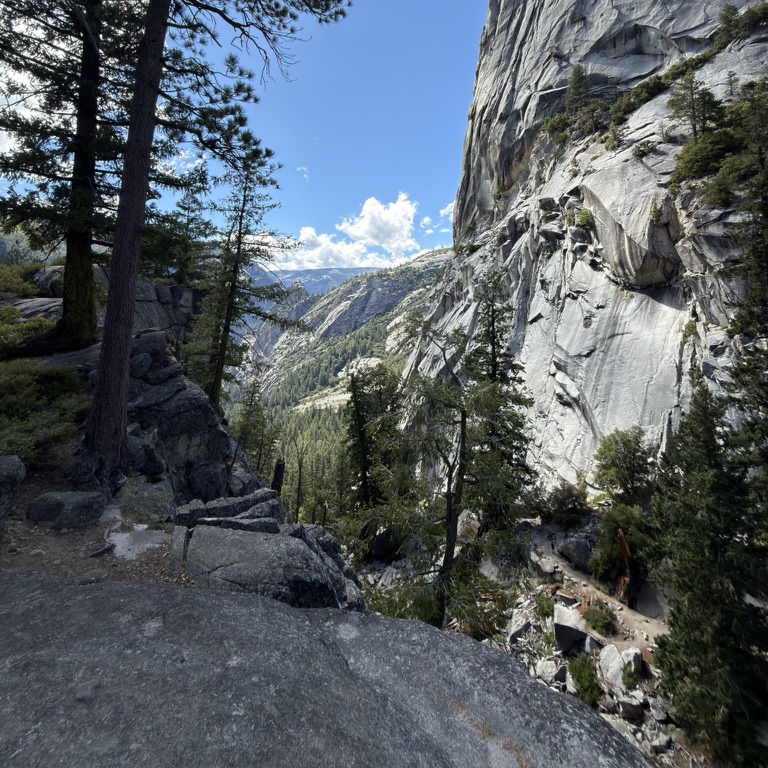

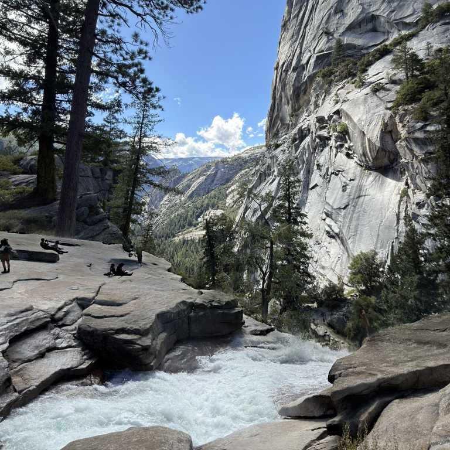
Convolutions, edges, sharpening, hybrid images, and multiresolution blending


Code: Colab notebook with all of my work
Most of this project comes down to one operation: sliding a small kernel over an image and taking a weighted sum at each pixel. Which kernel you use changes what you get. Averaging blurs, differencing neighbors finds edges, and subtracting a blurred image from the original leaves just the detail. Adding that detail back sharpens the image. Combining the blur of one image with the detail of another gives a hybrid image, and doing it one frequency band at a time gives a smooth blend.
In Part 1 I write convolution from scratch and use it to find edges. In Part 2 I use the Gaussian as a low-pass filter to sharpen images, make hybrid images, and blend images with Gaussian and Laplacian stacks.
Convolution flips the kernel horizontally and vertically, then slides it across the image. At each position it multiplies the kernel with the pixels underneath and adds everything up. My first version does this with four loops: two over the output pixels and two over the kernel.
def convolve_4_for(m1, m2):
m2k = m2[::-1, ::-1] # flip the kernel
out_h = m1.shape[0] - m2.shape[0] + 1
out_w = m1.shape[1] - m2.shape[1] + 1
result = np.zeros((out_h, out_w))
for m1y in range(out_h):
for m1x in range(out_w):
sum = 0
for m2y in range(m2.shape[0]):
for m2x in range(m2.shape[1]):
sum += m1[m1y + m2y, m1x + m2x] * m2k[m2y, m2x]
result[m1y, m1x] = sum
return resultThe two inner loops are just a dot product between the kernel and the patch under it. NumPy can do that in one line, so I replaced them with a slice, an elementwise multiply, and a sum.
def convolve_2_for(m1, m2):
m2k = m2[::-1, ::-1]
out_h = m1.shape[0] - m2.shape[0] + 1
out_w = m1.shape[1] - m2.shape[1] + 1
result = np.zeros((out_h, out_w))
for m1y in range(out_h):
for m1x in range(out_w):
sub_m1 = m1[m1y : m1y + m2.shape[0], m1x : m1x + m2.shape[1]]
result[m1y, m1x] = np.sum(sub_m1 * m2k)
return resultTo check my code I used a small non-square image and a 2×2 kernel. I picked a kernel that isn't symmetric on purpose, so if I forgot to flip it (which would give cross-correlation instead) the output would come out different from SciPy's.
m1 = [[ 1, 2, 3], m2 = [[1, 2],
[ 4, 5, 6], [3, 4]]
[ 7, 8, 9],
[10, 11, 12]]
convolve_4_for(m1, m2) == convolve_2_for(m1, m2) == convolve2d(m1, m2, mode='valid')
[[23, 33],
[53, 63],
[83, 93]]
Without padding, the output shrinks by k − 1 rows and
columns for a k×k kernel, since the kernel can only go where it fits
entirely inside the image. To keep the output the same size, I pad the image with zeros
first, k − 1 in total per axis. For even-sized kernels that
number is odd, so I put the extra row and column on the top and left. SciPy's
mode='same' does the same thing, so my results match it for both odd and
even kernels.
def convolve_zero_fill(m1, m2):
top_pad = (m2.shape[0] - 1) - (m2.shape[0] - 1) // 2
bottom_pad = (m2.shape[0] - 1) // 2
left_pad = (m2.shape[1] - 1) - (m2.shape[1] - 1) // 2
right_pad = (m2.shape[1] - 1) // 2
m1_padded = np.pad(m1, ((top_pad, bottom_pad), (left_pad, right_pad)),
'constant', constant_values=(0, 0))
return convolve_2_for(m1_padded, m2)
All three versions do the same amount of math, about
H · W · k2 multiply-adds. The
difference is how much of it happens in Python. The four-loop version does every
multiply-add in Python, so it's the slowest. The two-loop version only loops over the
H · W output pixels in Python and lets NumPy handle each
k×k product. convolve2d runs the whole thing in compiled
C.
I timed all three on my 1392 × 928 photo with the 9×9 box filter, one run each:
def quick_benchmark(name, func, *args, **kwargs):
start_time = time.time()
result = func(*args, **kwargs)
elapsed_time = time.time() - start_time
print(f"{name} took: {elapsed_time:.6f} seconds")
return elapsed_time
quick_benchmark("convolve_4_for", convolve_4_for, my_image, box_filter_9x9)
quick_benchmark("convolve_2_for", convolve_2_for, my_image, box_filter_9x9)
quick_benchmark("scipy.signal.convolve2d (mode='same')", convolve2d, my_image, box_filter_9x9, mode='same')| Implementation | Time (s) | vs. convolve2d |
|---|---|---|
convolve_4_for | 82.71 | 137× slower |
convolve_2_for | 9.42 | 16× slower |
scipy.signal.convolve2d | 0.61 | 1× |
Going from four loops to two made it about 9× faster (82.7 s to 9.4 s). Each
output pixel went from 81 Python multiply-adds to one NumPy call. Most of the remaining
9.4 s is Python overhead from looping over about 1.3 million pixels and making a slice
for each one. convolve2d gets rid of that too and is another 16×
faster.
These are single runs timed with time.time() on Colab, so the exact
numbers aren't precise, but the ratios are big enough to trust. My two versions
compute the unpadded 1384 × 920 output while convolve2d computes
the full 1392 × 928 one. That's only about 1.5% more pixels, so it doesn't
change the comparison.
For boundaries, my code either doesn't pad (so the output shrinks) or pads with zeros
(so the output stays the same size, but everything outside the image counts as black).
convolve2d also has boundary='wrap' and
boundary='symm', which mirrors the image at the edges. Mirroring avoids the
dark border problem I ran into below, so I used it later for the blending stacks.
I loaded the photo in grayscale and downsampled it 4× with INTER_AREA
so the Python loops wouldn't take forever. Then I convolved it with a 9×9 box
filter where every entry is 1/81.
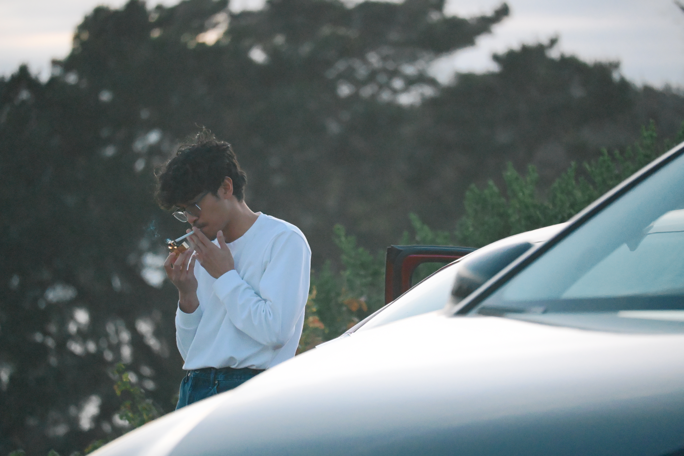
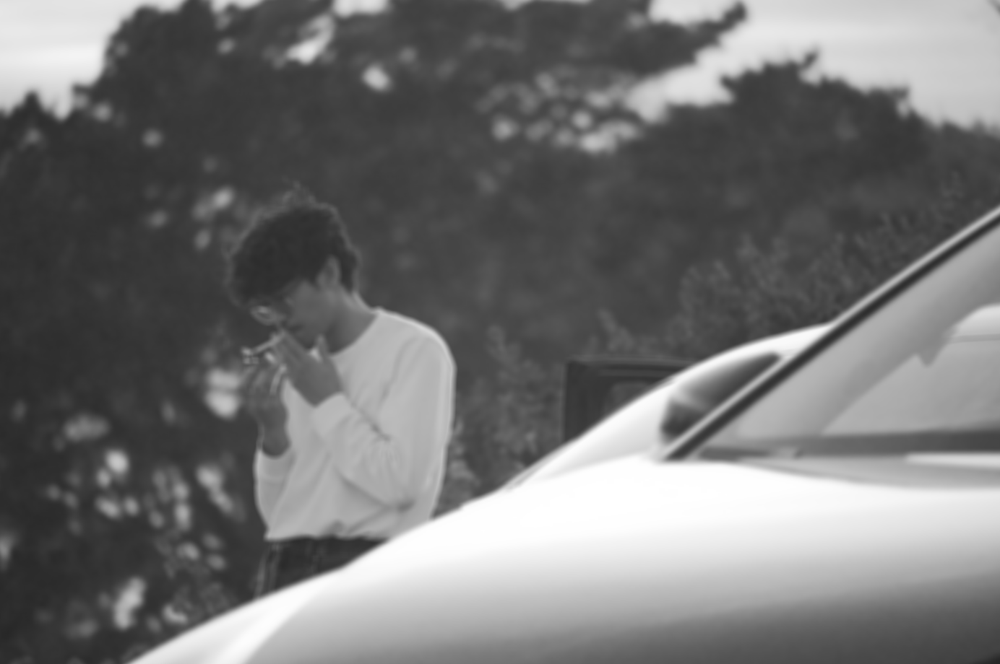
You can see the boundary handling in the output sizes. The unpadded version is 8 pixels
smaller in each dimension (9 − 1). The padded one keeps its
size, but the outer 4 pixels get darker because the average near the edge includes zeros
from the padding.
Dx = np.array([[1, 0, -1]])
Dy = np.array([[1], [0], [-1]])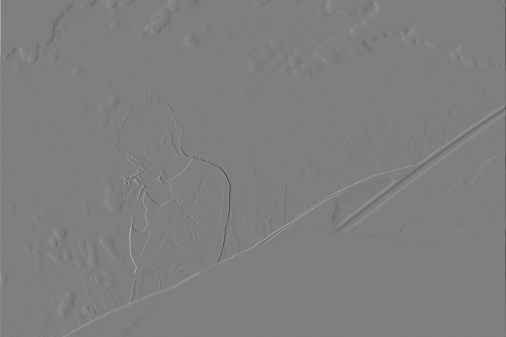
Dx, rescaled so mid-gray is zero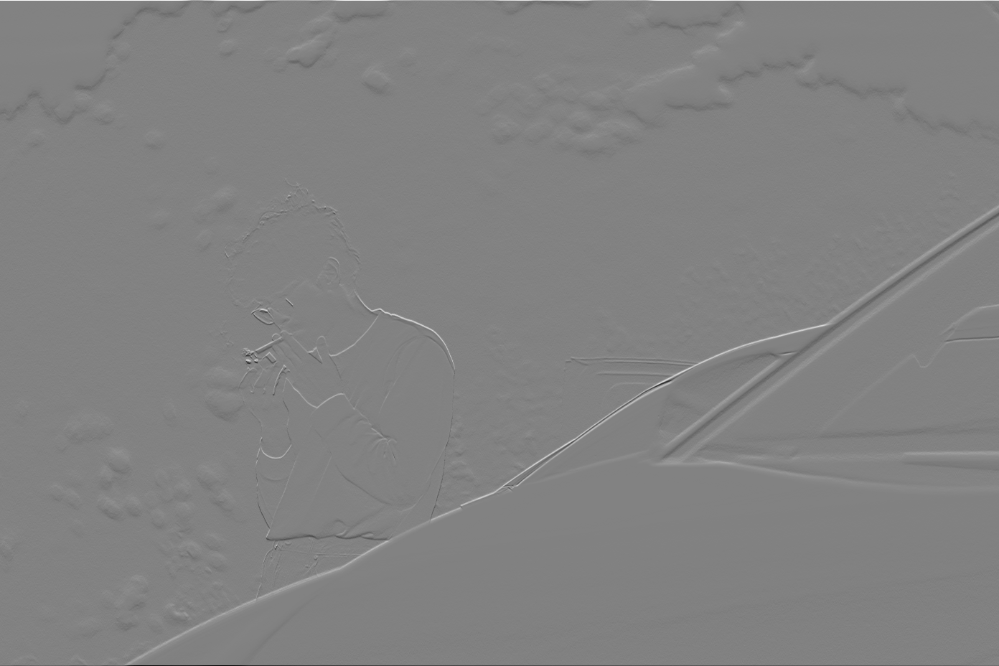
Dy, rescaled so mid-gray is zero
The derivatives can be negative, so I min-max normalized them to 0 to 255 for display.
Mid-gray means no change, and lighter or darker means the intensity goes up or down
along that direction. Dx picks up vertical edges and
Dy picks up horizontal ones. The windshield and hood of the car
are diagonal, so they show up in both.
I convolved the cameraman image with Dx and
Dy to get the two partial derivatives, then combined them into
the gradient magnitude: √(∂I/∂x2 +
∂I/∂y2).

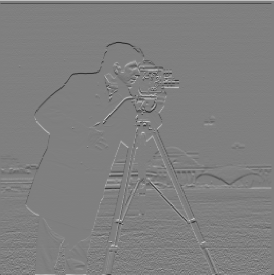
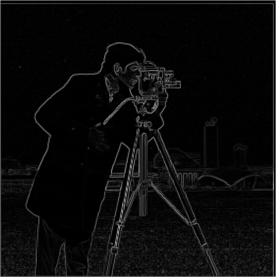
cameraman_dx = convolve_zero_fill(cameraman_image, Dx)
cameraman_dy = convolve_zero_fill(cameraman_image, Dy)
grad_mag = np.sqrt(cameraman_dx**2 + cameraman_dy**2)
edges = grad_mag > thresholdTo turn this into an edge image, I thresholded the gradient magnitude. I tried thresholds from 20 to 140 in steps of 20:
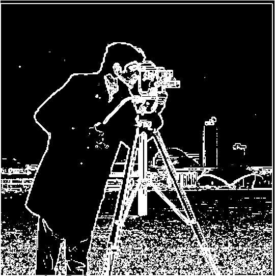
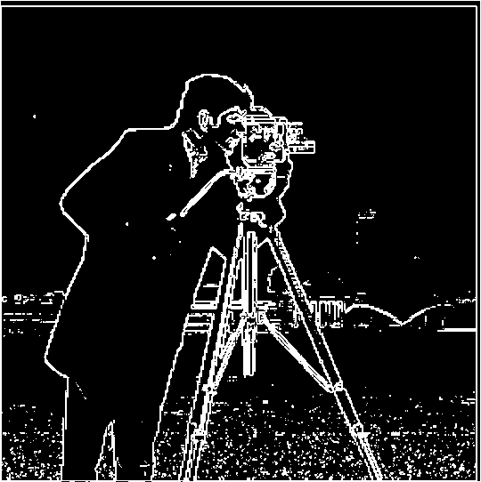


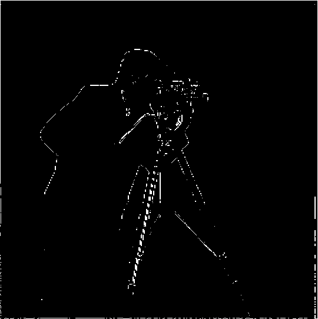
At 20 and 40, the grass in the bottom third of the image is full of white speckles. That's just texture and noise, not real edges. At 80 most of the grass noise is gone, and the outline of the coat, the camera, and all three tripod legs are still connected. Above 100 the real edges start breaking up. The buildings in the background disappear and the tripod legs turn into dashed lines.
I went with 80. It keeps all the edges I'd want on the man and the tripod. I lose the faint buildings in the background, but in exchange most of the grass noise is gone. There's still some speckle near the bottom. Raising the threshold more to remove it would cost too many real edges, so I left it. Part 1.3 deals with that noise in a better way.
The finite difference filter is only three pixels wide, so a single noisy pixel looks just like an edge to it. Blurring the image first averages that noise out. I made a 9×9 Gaussian with σ = 1 by taking the outer product of a 1D OpenCV Gaussian with itself, then ran the same steps as Part 1.2 on the blurred image.
g = cv.getGaussianKernel(9, 1)
gaussian_filter = g @ g.T # 9x9, sums to 1
blurred = convolve_zero_fill(cameraman_image, gaussian_filter)
gaus_dx = convolve_zero_fill(blurred, Dx)
gaus_dy = convolve_zero_fill(blurred, Dy)
gaus_mag = np.sqrt(gaus_dx**2 + gaus_dy**2)
edges = gaus_mag > 40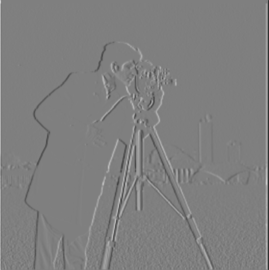
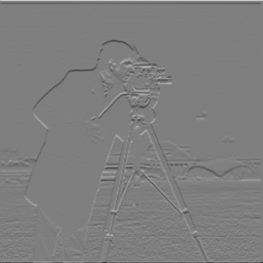
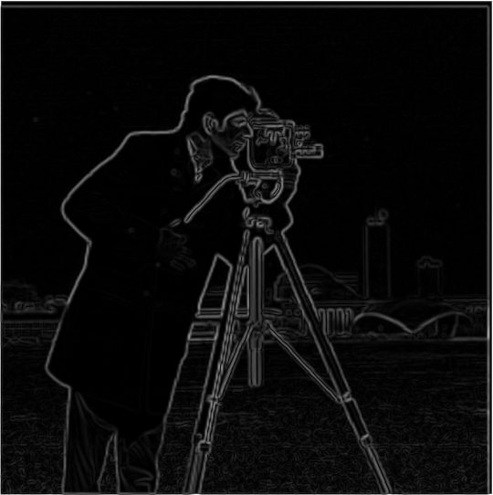
With the same threshold, the blurred version is much cleaner. The grass speckle is almost all gone. The edges are thicker and smoother, and they form continuous curves instead of jagged 1-pixel lines, since the blur spreads each edge across a few pixels before taking the derivative. Blurring lowers the gradient magnitude everywhere, but it lowers the noise a lot more than the real edges, because noise averages out and real edges don't. That's why 40 works here, while the unblurred version needed around 80.
There is one new problem: a thin bright frame around the border. This comes from zero padding. The blur mixes black padding into the border pixels, which creates a sharp drop in brightness at the edge of the image, and the derivative picks that up as an edge.
Since convolution is associative,
(I * G) * Dx = I * (G * Dx).
That means I can combine the Gaussian and the derivative into one filter ahead of time
and convolve the image once.
DoGx = convolve2d(gaussian_filter, Dx) # 9x11
DoGy = convolve2d(gaussian_filter, Dy) # 11x9
dogx = convolve_zero_fill(cameraman_image, DoGx)
dogy = convolve_zero_fill(cameraman_image, DoGy)
dog_mag = np.sqrt(dogx**2 + dogy**2)
s = slice(8, -8)
np.allclose(gaus_mag[s, s], dog_mag[s, s]) # True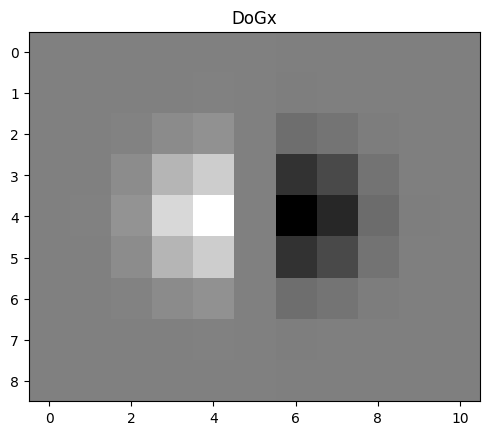
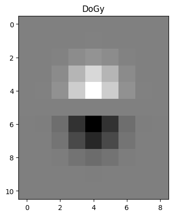
Each filter looks like a Gaussian split into a positive half (white) and a negative half
(black), with gray as zero. In DoGx the halves are side by side, so it finds
vertical edges. In DoGy they're stacked, so it finds horizontal edges. The
white half is on the left, but because convolution flips the kernel, it still computes
right minus left, the same sign as
Dx = [1, 0, −1]. Each filter is also 2
pixels longer in the derivative direction, because the full convolution with the 3-wide
difference filter adds 1 pixel on each side.

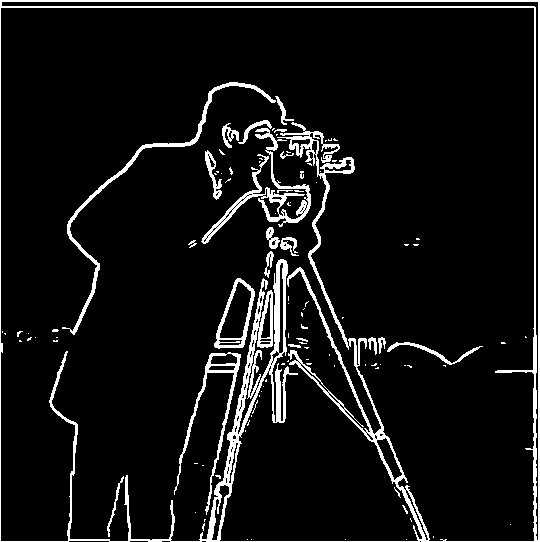
The two edge maps look the same, and np.allclose confirms it. I had to cut
off 8 pixels around the border for the check to pass. Associativity only holds exactly
for an infinite image. With zero padding, the two-step version pads twice (once for the
blur, once for the derivative) while the DoG version pads once with a bigger kernel, so
the border pixels come out a bit different. Everywhere else they match.
A Gaussian is a low-pass filter, so I * G keeps only the low
frequencies. Subtracting that from the original leaves the high frequencies, which are
the edges and fine texture. Images look sharper when those are stronger, so unsharp
masking adds extra high frequencies back in:
sharpened = I + α(I − I * G)
Since convolution is linear, this can be done with one filter. Using the unit impulse
δ (1 in the center, 0 everywhere else, so
I * δ = I):
I + α(I − I*G) = I * ((1 + α)δ − αG)unit_impulse = np.zeros_like(gaussian_filter)
unit_impulse[4, 4] = 1
def unsharpen_filter(image, alpha=5):
unsharp_filter = (1 + alpha) * unit_impulse - alpha * gaussian_filter
return convolve_zero_fill(image, unsharp_filter)The filter sums to 1, so flat areas don't change. Only pixels that are different from their neighborhood get boosted.
To test this, I took a sharp night photo of the Campanile, blurred it with a 29×29 Gaussian (σ = 2), and used the blurred version as my input. Then I sharpened it with the 9×9, σ = 1 Gaussian and α = 5, once as three separate steps and once as a single filter.
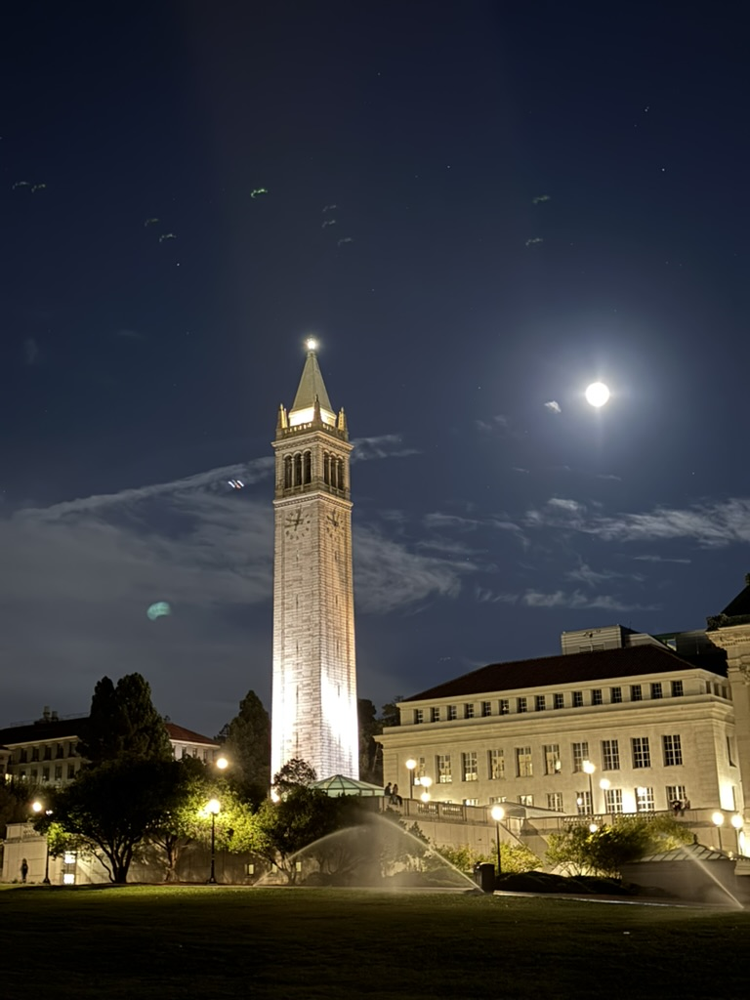
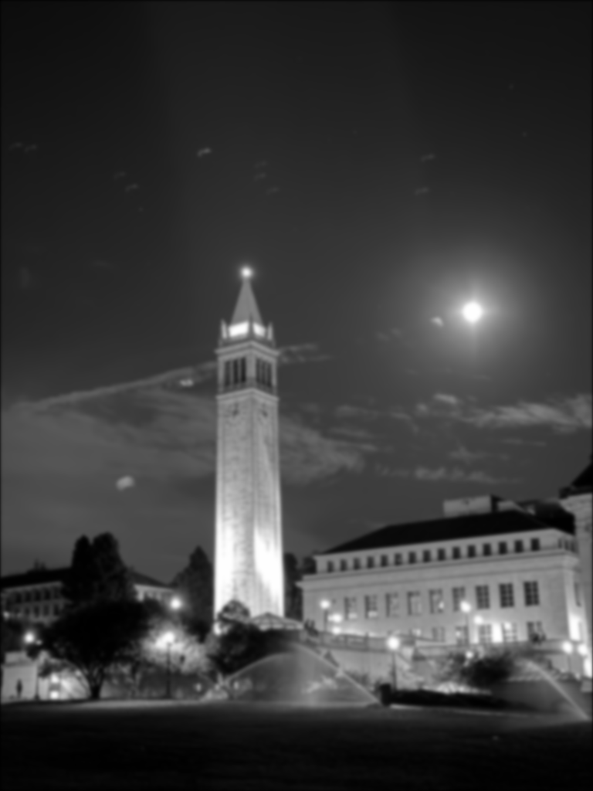
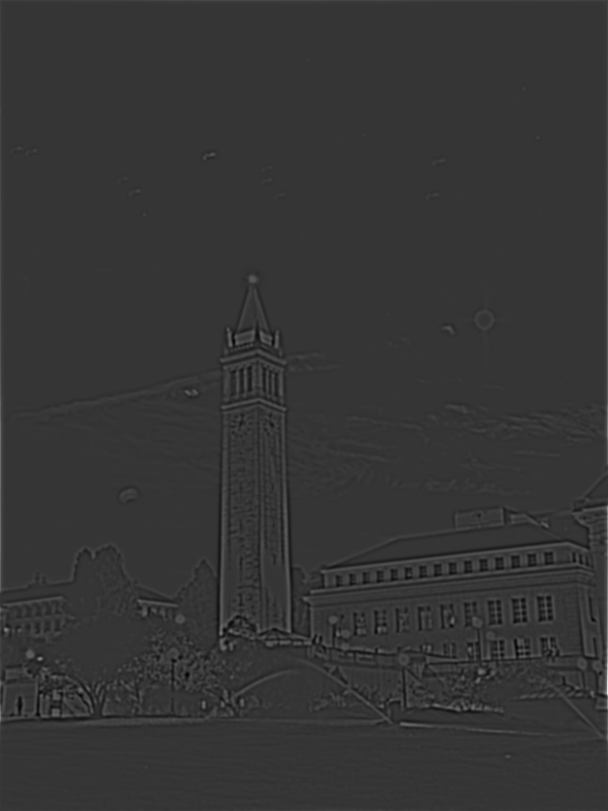

Both sharpened images are the same (np.allclose returns True),
so the single filter works. Compared to the blurred input, the windows and columns on
the tower are much clearer, the roofline of the building is sharper, and the lampposts
stand out again.
Next to the original, though, it's clear that sharpening doesn't bring everything back. The σ = 2 blur almost completely removed the finest detail, and unsharp masking can only boost frequencies that are still there. What comes back is extra contrast in the mid frequencies. It looks sharper, but it isn't the original detail. Noise gets boosted too, which is why the sky in the Taj Mahal gets grainy at high α below.
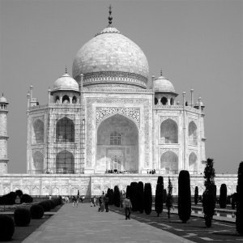
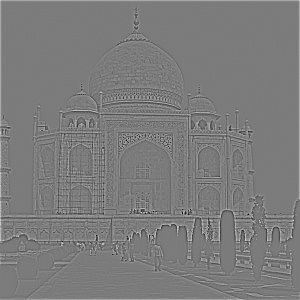
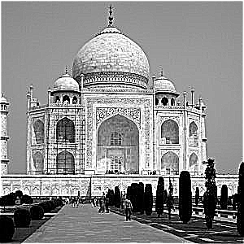
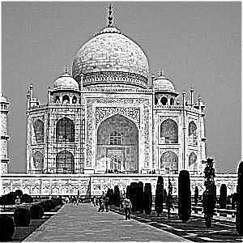
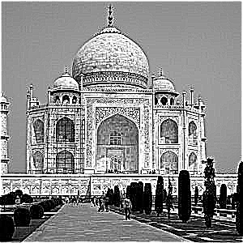
The blurred image is what unsharp masking subtracts. Subtracting it from the original gives the high-frequency image, which is mostly the carving on the building, the edges of the minarets and dome, and the outlines of the trees. That's the part that gets boosted.
α sets how much of the high frequencies get added back. At α = 1 the difference is small, with the carving and minarets a bit more defined. At α = 3 it looks noticeably sharper without looking processed, so that's what I'd pick. From 5 up, the side effects take over. Light and dark halos show up around edges (easy to see around the dome), the sky and walkway get grainy, and the trees turn into dark shapes with white outlines as pixels clip at 0 and 255. By α = 9 it looks more like a drawing than a photo.
For the color version I ran the filter on each RGB channel separately and stacked them back together.
channels = [unsharpen_filter(taj_color[:, :, c], 3) for c in range(3)]
sharpened = np.clip(np.dstack(channels), 0, 255).astype(np.uint8)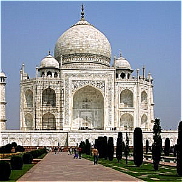
A hybrid image mixes the low frequencies of one image with the high frequencies of another. Up close you mostly notice the high frequencies. From far away you can't see them anymore, so only the low-frequency image is left.
def filter_color(img, kernel):
return np.dstack([convolve2d(img[:, :, c], kernel, mode="same")
for c in range(img.shape[2])])
def hybrid_image(image1, image2, sigma1, sigma2):
g1 = cv.getGaussianKernel(7 * sigma1, sigma1)
low_pass_filter = g1 @ g1.T
g2 = cv.getGaussianKernel(7 * sigma2, sigma2)
G2 = g2 @ g2.T
high_pass_filter = unit_impulse(G2.shape, "mid") - G2 # impulse minus Gaussian
return filter_color(image1, low_pass_filter) + filter_color(image2, high_pass_filter)
The low-pass filter is a regular 2D Gaussian. The high-pass filter is the impulse minus
a Gaussian, the same trick as in Part 2.1. I set the kernel size to
7σ so the Gaussian doesn't get cut off.
Derek is the low-frequency image (σ1 = 3) and Nutmeg is the
high-frequency image (σ2 = 7). I lined them up with the
provided align_images code by clicking on the eyes, then cropped to
[200:1100, 100:700] to get rid of most of the black border from the
rotation.


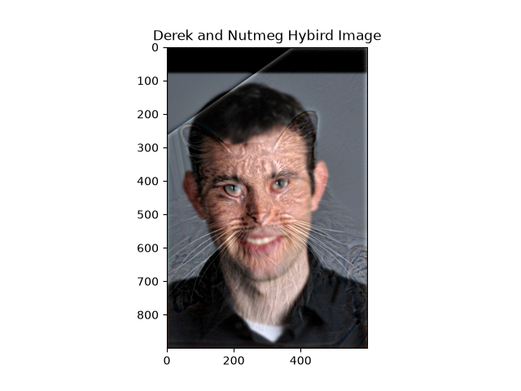
Choosing the cutoffs. A Gaussian with standard deviation σ in the
image is also a Gaussian in frequency, with standard deviation about
1/(2πσ) cycles per pixel. With σ1 = 3,
Derek keeps frequencies below roughly 0.05 cycles/pixel. That's enough for the shape of
his face, hair, and shirt, but not skin texture. With σ2 = 7,
Nutmeg loses everything below roughly 0.02 cycles/pixel (the overall shape of the head
and the fur color) and keeps the whiskers and fur edges. The two ranges overlap a
little, so at medium distance you can see both, and the switch from one to the other is
gradual.
This one shows a change over time: a fresh bouquet of red roses and a bouquet of wilted
ones. The wilted roses are the low-frequency image (σ1 = 5)
and the fresh roses are the high-frequency image (σ2 = 7).
The wilted photo was smaller, so I scaled it up 2× before aligning. I also
multiplied the high-pass part by 1.5 (low + 1.5 × high) to make the
fresh roses stronger up close, and cropped the result to the top 1250 rows. Up close you
see the sharp petal outlines of the fresh roses. From far away those disappear and you
see the drooping shape and faded color of the dead ones.
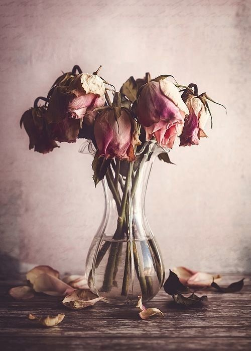
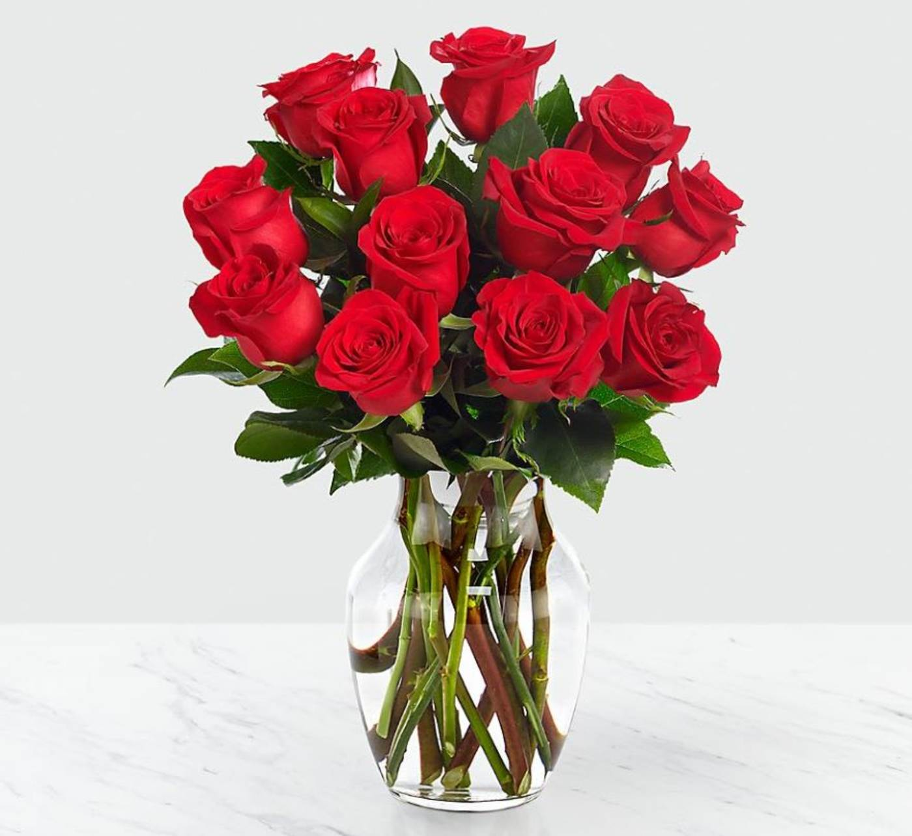
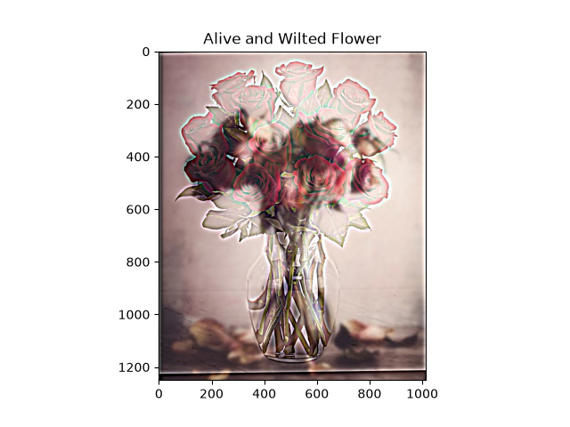
These are the log magnitude of the 2D Fourier transform
(np.log(np.abs(np.fft.fftshift(np.fft.fft2(gray))))). The center of each
plot is zero frequency, and frequency increases as you move out from the center.
Before filtering: the aligned inputs
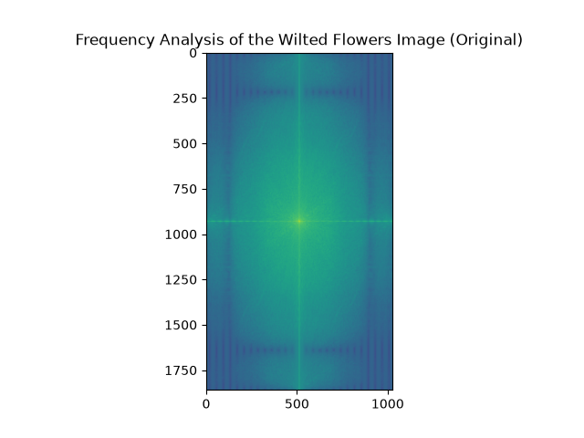
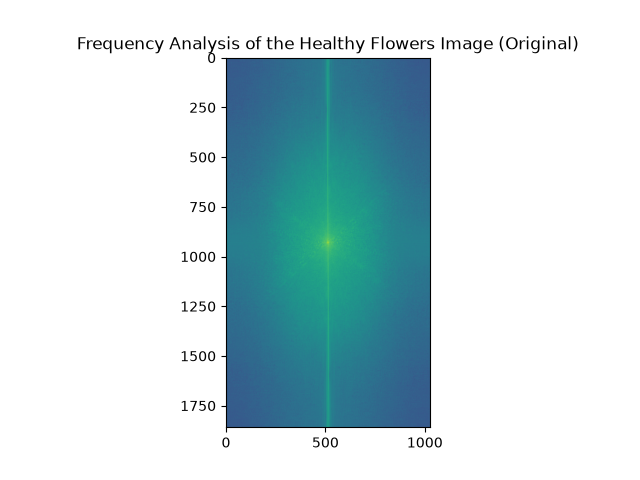
After filtering, and the hybrid
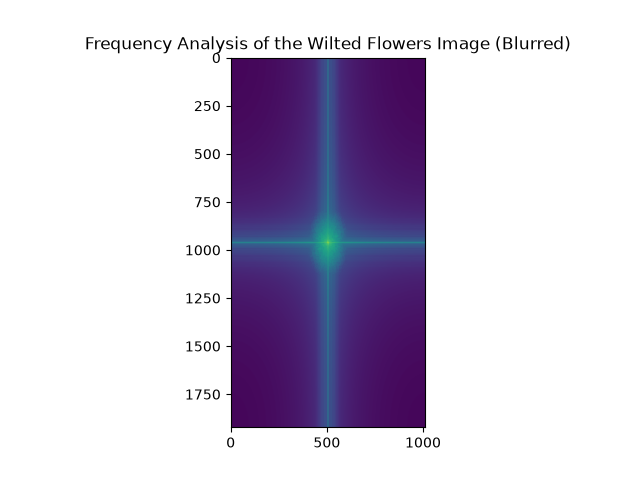
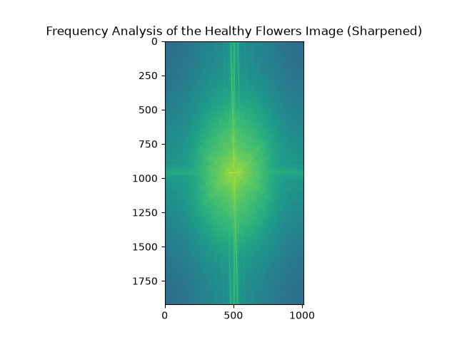
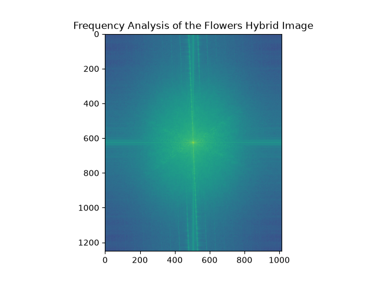
Before filtering, both spectra look pretty similar: bright in the center and fading out smoothly, with some energy at every frequency. The wilted roses also have a faint darker border near the edges of the plot. I think this comes from scaling that photo up 2×, since upscaling can't add detail finer than the original pixels, so the highest frequencies are nearly empty.
After filtering they look very different. The low-passed wilted roses only have a small bright spot in the center, and everything else goes dark because the Gaussian removed it. The high-passed fresh roses still have energy spread across the whole plot, including far from the center. The hybrid has both: the bright center from the wilted roses and the spread-out high frequencies from the fresh ones. That's why you see one image up close and the other from far away.
This one morphs between two round bowls seen from above: a blue tub of ice water and a bowl of food. The ice bowl is the low-frequency image (σ1 = 3) and the food bowl is the high-frequency image (σ2 = 5).
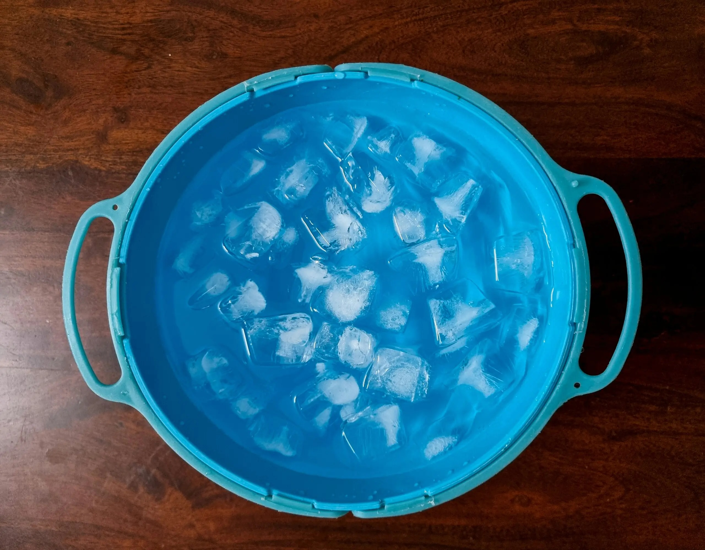
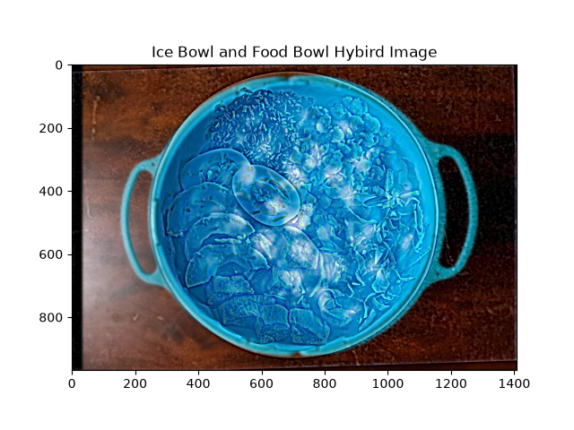
A stack is like a pyramid, but without downsampling. Every level stays full size, so the
whole stack fits in one array of shape (levels, H, W, 3), and levels can be
added or blended pixel by pixel without upsampling anything.
Gaussian stack: level 0 is the original image, and each level after that is the previous level blurred again. I increase the blur each level (σ = 2i at level i, kernel size 14i). Since blurring a blurred image adds the variances, the total σ at levels 1 through 6 is about 2, 4.5, 7.5, 11, 15, and 19. That's roughly how the blur grows in a pyramid that halves the size at each level.
Laplacian stack: each level is one Gaussian level minus the next one, which leaves one band of frequencies. The last level is just the last Gaussian level. That way, adding up all the Laplacian levels gives back the original image exactly, which the blending in Part 2.4 relies on.
level = 7
gaussian_levels = [image]
for i in range(1, level):
g = cv.getGaussianKernel(i * 7 * 2, i * 2)
kernel = g @ g.T
gaussian_levels.append(np.dstack([
convolve2d(gaussian_levels[i - 1][:, :, c], kernel, mode='same', boundary='symm')
for c in range(3)]))
gaussian_stack = np.stack(gaussian_levels)
laplacian_levels = [gaussian_stack[i] - gaussian_stack[i + 1] for i in range(level - 1)]
laplacian_levels.append(gaussian_stack[-1])
laplacian_stack = np.stack(laplacian_levels)Laplacian levels have negative values and are small, so for display I min-max normalized each level (except the last) separately.
Gaussian stack

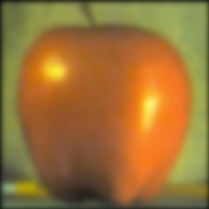
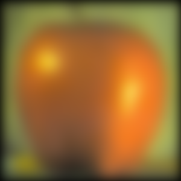
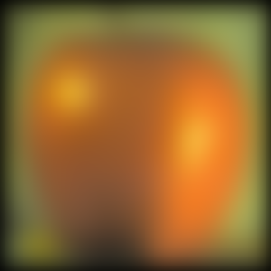

Laplacian stack
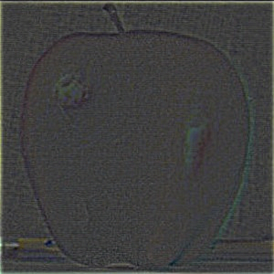
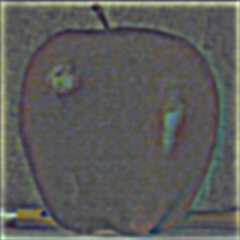
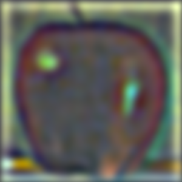
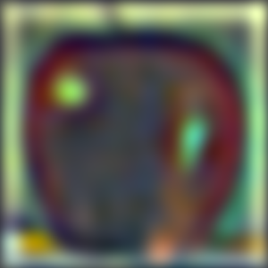
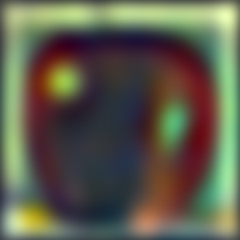
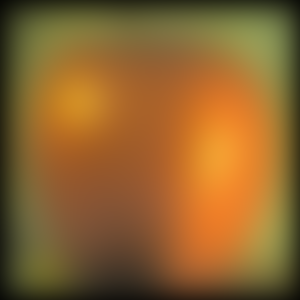
Gaussian stack

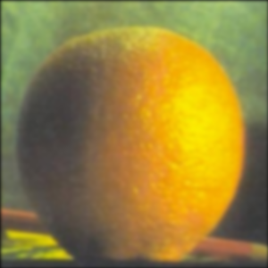
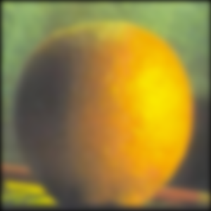
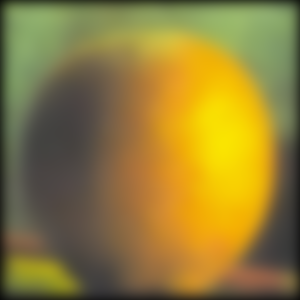
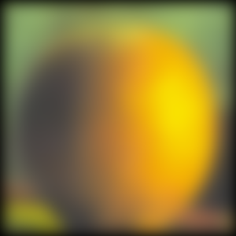
Laplacian stack

Each Laplacian level shows a different size of detail. Level 0 has the dimples on the orange peel and the speckle on the apple. The middle levels have the outline of the fruit and the highlight on the apple. The last level is just the overall color.
The bright frame around the apple and orange Laplacian levels is a mistake from my first
version. I used the default zero-fill boundary in convolve2d for these two,
so every blur darkens the border, and each difference of Gaussians gets a fake edge
there. I switched to boundary='symm' (mirror the image at the edges) for
all the other stacks, and the frame went away.
Like Figure 3.42, each row below is one frequency band. The first two columns are the apple and orange Laplacian levels, and the third is the blended band (explained in Part 2.4). The last row shows the two input images and the oraple you get from adding up all the blended bands.
If you just put half of one image next to half of the other, you get an obvious seam. Blurring the seam with a single blur doesn't really fix it. A small blur still leaves a sudden change in color or brightness, and a large blur makes the fine detail from both images overlap and look ghosted.
Burt and Adelson's fix is to blend each frequency band with a different transition width. I make a Gaussian stack of the mask and use mask level i to blend level i of the two Laplacian stacks. Fine detail gets a sharp mask, so it switches over quickly without ghosting. Low frequencies like overall color get a very soft mask, so they fade slowly over a large area. Adding up the blended bands gives the final image.
mask_levels = [mask]
for i in range(1, level):
g = cv.getGaussianKernel(i * 7 * 4, i * 8)
kernel = g @ g.T
mask_levels.append(convolve2d(mask_levels[i - 1], kernel, mode='same', boundary='symm'))
mask_stack = np.stack(mask_levels)[..., None] # broadcast over RGB
blended_stack = mask_stack * laplacian_A + (1 - mask_stack) * laplacian_B
result = np.clip(blended_stack.sum(axis=0), 0, 1)
I blur the mask much more than the images (σ = 8i per level instead of
2i). If the mask were only as soft as the image levels, the low-frequency levels would
still switch too quickly for how large their features are. I also used
boundary='symm' for the mask from the start. With zero fill, the mask would
fade to 0 at the edges of the image and let the second image leak in around the border.
The mask is a vertical step: 1 on the left half (apple) and 0 on the right half (orange).

Mask Gaussian stack
Blended Laplacian stack
There's no visible seam. The orange peel texture stops sharply at the middle, but the color goes from red to orange over a much wider area. That's the result of each band getting its own mask width.
These are two of my own photos from Yosemite: one looking down the valley toward the granite walls, and one of water rushing over rocks at the top of a waterfall. I wanted to keep the sky, trees, and cliffs from the first photo and put the waterfall and rocks from the second one underneath.
One photo is portrait and the other is landscape, so I cropped both to 768 × 768, using the bottom square of the mountain photo and the left square of the falls photo.
Mountain Gaussian stack


Mountain Laplacian stack
Falls Gaussian stack

Falls Laplacian stack
These stacks use boundary='symm', so the bright frame from the apple and
orange stacks isn't there.
The rocks in the falls photo slope down from left to right, so a horizontal seam would go through rock on one side and the background on the other. My first mask was a straight line from row 400 on the left to row 600 on the right, with everything below it coming from the falls photo.
yy, xx = np.mgrid[0:H, 0:W]
line_y = 400 + (600 - 400) * xx / W
mask[yy >= line_y] = 1.0
Mask Gaussian stack
Blended Laplacian stack
The straight line is close, but the top of the rock ledge isn't straight. It goes up and down with the shape of the granite. Wherever the line doesn't follow it, the blend mixes rock from the falls photo with trees from the mountain photo, and that area looks hazy. So I picked 17 points along the top edge of the rocks and used linear interpolation between them to get a boundary height for every column:
xs = [0, 50, 100, 150, 200, 250, 300, 350, 400, 450, 500, 550, 580, 620, 650, 700, 768]
ys = [390, 398, 405, 410, 415, 428, 452, 488, 510, 543, 572, 588, 597, 578, 565, 548, 530]
boundary = np.interp(xx, xs, ys)
mask[yy >= boundary] = 1.0This is my favorite result, so here's the full process like Figure 10 in Burt and Adelson. Each row is one band: the mask at that level, the two Laplacian bands, and the blended band.

Neither blend has a visible hard edge. The irregular mask looks more natural, though, because the transition happens where the scene already changes from rock to trees, so a change in texture there doesn't look out of place. The difference is easiest to see at full size along the ledge on the left, where the edge of the rock stays sharp instead of fading into the trees behind it.
Two photos of Sather Tower from almost the same spot, one in the afternoon and one at night. I used a vertical seam down the middle of the tower.

The tower isn't framed the same way in both photos. Cropping the top 300 rows off the night photo and resizing it back to 768 × 1024 gets the tower to roughly the same size and position, so the two halves line up at the seam.
Day Gaussian stack


Day Laplacian stack
Night Gaussian stack

Night Laplacian stack
Mask Gaussian stack

Blended Laplacian stack
The sky goes from daytime blue to night blue gradually across the middle without a line. That comes from the low-frequency levels, where the mask transition is hundreds of pixels wide. The tower itself is split more sharply, with the left side in daylight and the right side lit up at night. That happens in the fine levels, where the mask is still almost a hard step. The weak spots are where the photos don't match. The trees and people on the path are from different times, and the crop and resize is only a rough alignment, so any mismatch in the tower's outline shows up right at the seam.
The biggest thing I learned is how much the image boundary matters. Zero padding caused problems all over this project. It darkened the border of the box-filtered photo, added a fake edge frame to the blurred cameraman, made the DoG check only work away from the border, and put bright frames on every level of my first Laplacian stacks. Convolution in theory assumes the image goes on forever, but in code you have to decide what happens past the edge. Switching to mirrored boundaries fixed most of these.
I was also surprised how much you can do with just a Gaussian. It blurs, it cleans up noise before taking derivatives, subtracting it from an impulse gives a high-pass filter, adding that back sharpens, and repeating it gives the frequency bands for blending. Pretty much everything in this project is a small variation on the same operation.